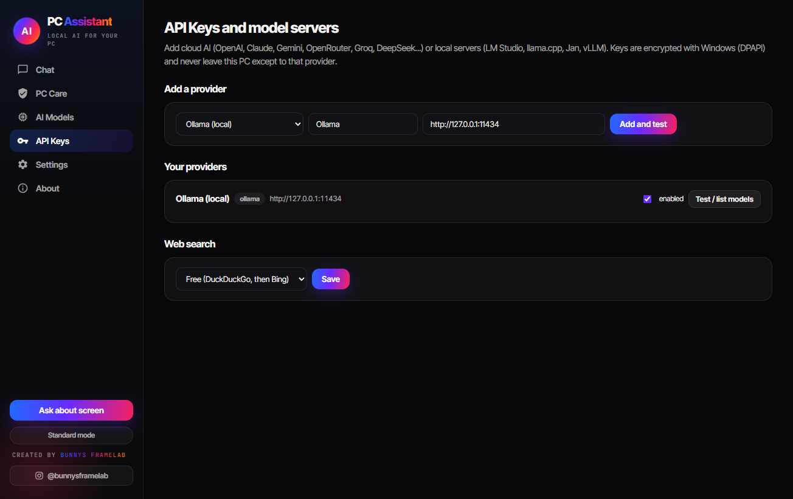
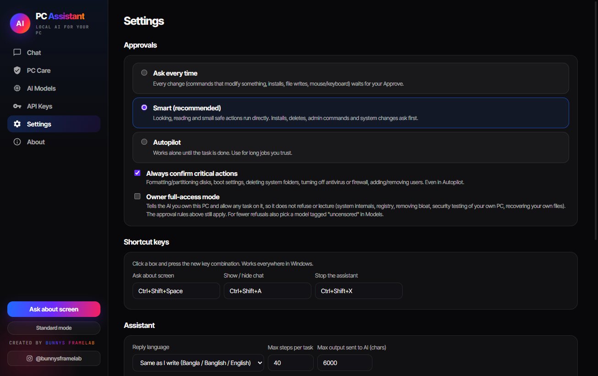

A powerful AI assistant that works on your own computer: fixes problems, runs terminal work, installs software, cleans and organizes files, checks security and explains anything on your screen. For Windows and macOS.
PC Assistant is a desktop app with a chat window. You tell it, in your own words (English, Bangla or Banglish), what you need: "my C drive is full", "is my PC hacked?", "install this file", "sort my Downloads by type", "where are Photoshop's settings?". It looks at your computer, explains what it found in simple words, asks before anything risky, does the work, and checks that it worked.
It runs on local AI (a model on your own computer through Ollama), so your chats and files stay private and it costs nothing. If you prefer, it also works with cloud AI (OpenAI, Claude, Gemini, OpenRouter, Groq, DeepSeek and more) using your own API key.
Most people get stuck on small computer problems every day: a full drive, an app that will not install, an error message they do not understand, a setting they cannot find, a worry that the PC might be hacked. Fixing these usually means searching forums, copying commands you do not understand, or waiting for someone who "knows computers".
PC Assistant was built to be that person: one assistant that can see the problem, explain it, and fix it with your permission, privately, on your own machine, in the language you speak.
Features
Chat that does the workRuns terminal commands (PowerShell on Windows, zsh on Mac), reads and edits files, changes code, settings and configs for you.
Ask about your screenPress Ctrl+Shift+Space anywhere, select what you do not understand, then choose Explain, Guide me or Do it for me.
Install anythingDrop a setup file (exe, msi, dmg, pkg, zip) into the chat. It checks the file and its signature, then installs it. Knows winget and Homebrew.
Clean the driveScans temp files, caches, update leftovers, old installers and more. Shows what is safe and what you would lose, then cleans only what you approve.
Organize files"Put images, screenshots, videos and documents in separate folders", "sort photos by month and year", custom rules. Preview first, undo anytime.
Security checkAntivirus, firewall, suspicious startup items and background tasks, open ports, remote access, proxy, hosts file. Explains each finding and fixes it.
App help"Where are this app's settings?", "where does it keep its files?", "how do I do X in it?" It finds the real folders on your computer and the steps online.
Look and settingsChange wallpaper, dark or light mode, transparency, and opens the right settings page with step-by-step guidance for everything else.
Web researchSearches the internet with a built-in private browser and reads pages when it does not know something, with source links.
Models in one clickInstall Ollama, download 47 ready models (with "fits your GPU" hints), import your existing .gguf files or model folder, or use any API key.
You stay in controlAsk / Smart / Autopilot approval modes, extra confirmation for critical actions, an emergency Stop hotkey, a full log of every action.
Bangla friendlyWrite in Bangla, Banglish or English. It answers in the same language.
Install on Windows
Needs: Windows 10 or 11 (64-bit). 8 GB RAM minimum; 16 GB+ and an NVIDIA/AMD GPU with 6 GB+ memory recommended for local AI.
Open the latest release and download PC-Assistant-Setup-1.2.0-windows.exe.
Double-click it. Windows may show "Windows protected your PC" because the app is new and not code-signed: click More info → Run anyway.
Choose the install folder (any drive is fine) and click Install. A desktop shortcut is created and the app opens.
Needs: a recent macOS (13 Ventura or newer recommended). Apple Silicon (M1/M2/M3/M4) with 16 GB+ memory is best for local AI.
Find your chip: Apple menu → About This Mac. "Apple M..." = Apple Silicon, "Intel" = Intel.
From the latest release download PC-Assistant-1.2.0-mac-arm64.dmg (Apple Silicon) or PC-Assistant-1.2.0-mac-x64.dmg (Intel).
Open the .dmg and drag PC Assistant into Applications.
First start: the app is not notarized by Apple yet, so macOS blocks a normal double-click. Right-click (or Control-click) PC Assistant in Applications → Open → Open. If there is no Open button, go to System Settings → Privacy & Security and click Open Anyway.
Allow the permissions when asked (System Settings → Privacy & Security):
Screen Recording - needed for "Ask about screen" and screenshots.
Accessibility - needed only if you want it to click and type for you.
Automation (System Events / Finder) - for wallpaper, dark mode and moving files to the Trash.
The Mac version is built automatically by GitHub on Apple computers from the same code as the Windows version. If something does not work on your Mac, please report it (see FAQ).
Set up the AI (one time)
Option A: Local AI (free, private) - recommended
Open AI Models in the app.
If Ollama is not installed, click Download and install Ollama and choose a folder.
Under Download models, pick one marked recommended that says fits your GPU, and click Download.
Click Use on the downloaded model. Done.
Your computer
Good model to start with
GPU with 8-16 GB, or Mac with 16 GB+
qwen3-vl:8b-instruct (sees screenshots, fast, best all-round)
GPU with 6 GB, or 8 GB Mac
qwen3-vl:4b-instruct
Weak PC, no GPU
qwen3-vl:2b-instruct, or use an API key (Option B)
24 GB+ GPU / 32 GB+ Mac
qwen3-vl:30b or gpt-oss:20b
Already have models? Use Scan a folder for models or Import one .gguf file, or point the app to LM Studio / llama.cpp on the API Keys page.
Option B: Cloud AI with your API key
Open API Keys, choose a provider (OpenAI, Anthropic Claude, Google Gemini, OpenRouter, Groq, DeepSeek, Mistral, xAI...), paste your key, click Add and test, then click a model to use it. Keys are encrypted by your operating system and only sent to that provider.

How to use
Just ask in the chat
My C drive is full, clean it safely
Is my PC hacked? Check everything
Install "D:\Downloads\setup.exe"
Organize my Downloads: images, screenshots, videos, documents in separate folders
Sort the photos in Pictures into year and month folders
Where are VS Code's settings and how do I change the font size?
Turn on dark mode and set this picture as wallpaper: C:\Pictures\sky.jpg
amar internet slow, keno check kore thik kore dao
Ask about anything on your screen
Press Ctrl+Shift+Space (change it in Settings).
Drag a box around the thing you do not understand (or press Enter for the whole screen).
Type your question (optional) and choose Explain, Guide me or Do it for me.
Approval modes
Mode
What happens
Ask
Every change waits for your Approve button.
Smart (default)
Looking and small safe actions run directly; installs, deletes, admin commands and system changes ask first.
Autopilot
Works alone until the task is done. Critical actions (formatting disks, turning off security, deleting system files) still ask unless you turn that off.
Other shortcuts: Ctrl+Shift+A show/hide the chat, Ctrl+Shift+X stop the assistant immediately.

Safety and privacy
With local AI nothing leaves your computer except web searches the assistant makes.
Every risky action shows an Approve card with the exact command; you can edit or deny it.
Deleted files go to the Recycle Bin / Trash by default; file organizing can be undone; edited files get a .bak copy.
Web pages are read in a locked private browser that cannot download files or reach your local network. After the AI has read web content, risky actions always ask you, so a web page cannot trick it into acting alone.
System folders are protected from organizing and cleaning.
API keys are encrypted with Windows DPAPI / macOS Keychain.
If you choose a cloud AI provider, your messages, the screenshots you send and basic computer details (computer name, user folder path) go to that provider.
Owner full-access mode (Settings) tells the AI you own the computer so it does not refuse tasks on it. Use it only on your own computer. The approval rules still apply. Never use PC Assistant on computers you do not own or manage.
Problems / FAQ
"No model selected" or the AI does not answer
Open AI Models, make sure Ollama shows running, and click Use on a downloaded model. The first answer after starting the computer can take 20-30 seconds while the model loads.
It is slow
Pick a smaller model, or one marked fits your GPU. Close heavy apps and games. Cloud models (API key) are fastest on weak computers.
The shortcut key does nothing
Another app uses it. Settings → Shortcut keys → click the box and press a new combination.
Mac: "Ask about screen" shows a black picture
Allow Screen Recording for PC Assistant in System Settings → Privacy & Security, then quit and reopen the app.
Windows: drag and drop does not work
Windows blocks drag and drop into apps running as administrator. Use the File button, or run the app normally.
Install: Release page theke Windows hole .exe, Mac hole .dmg download kore install korun. Windows "protected your PC" dekhale More info → Run anyway. Mac-e prothombar right-click → Open.
AI chalu:AI Models page → Ollama install → qwen3-vl:8b-instruct download → Use. Ba API Keys page-e nijer key din.
Kaj korano: Chat-e Bangla/Banglish-e likhun, jemon "amar C drive vore geche, clean koro" ba "Downloads er file gula type onujayi sajao".
Screen-er kichu na bujhle:Ctrl+Shift+Space chepe jayga-ta select korun → Explain / Guide me / Do it for me.
Nirapotta: Jhukir kaj korar age app apnar approval chay. Bondho korte Ctrl+Shift+X.
Uninstall
Windows: Settings → Apps → Installed apps → PC Assistant → Uninstall. Your chats and settings are in the Data folder shown in the app's Settings; delete it if you want to remove everything.
Mac: Drag PC Assistant from Applications to the Trash. Data is in ~/Library/Application Support/PC Assistant Data.
Ollama and downloaded models are separate; remove them from Ollama or its own uninstaller if you no longer need them.